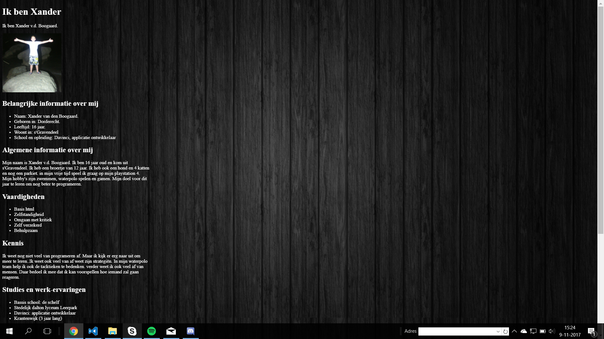
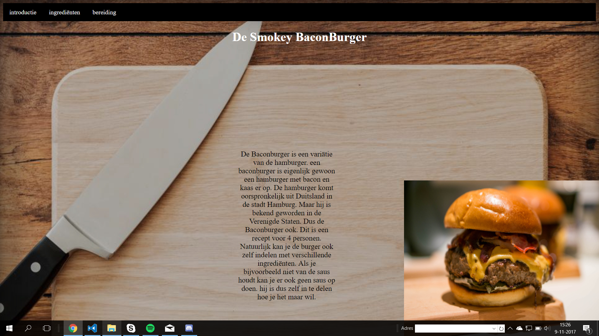
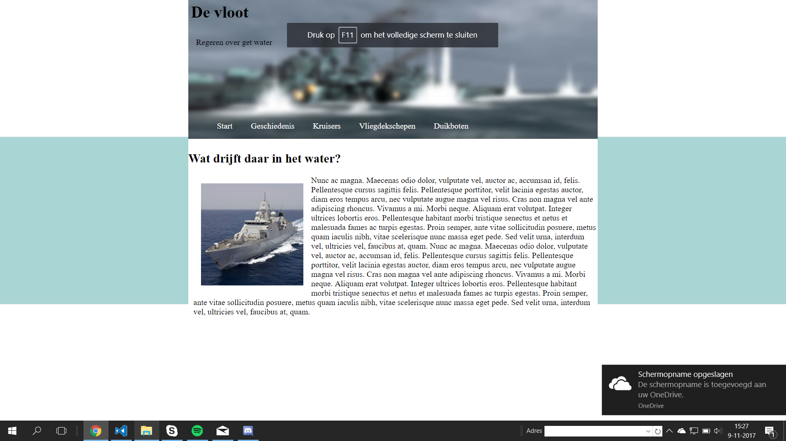
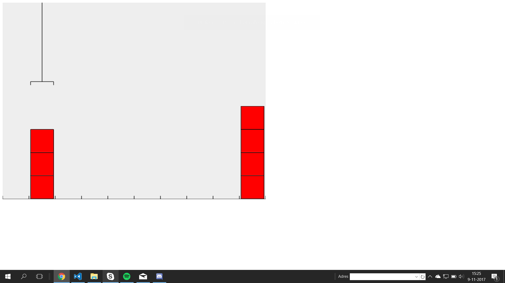
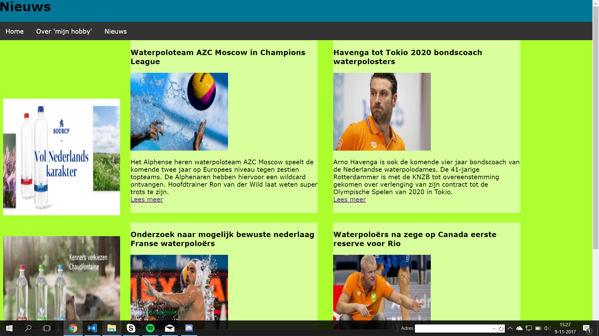
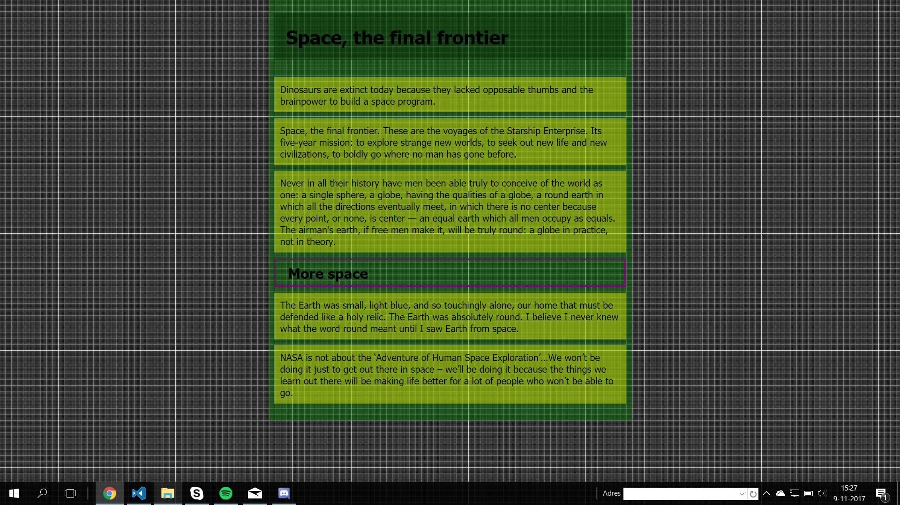
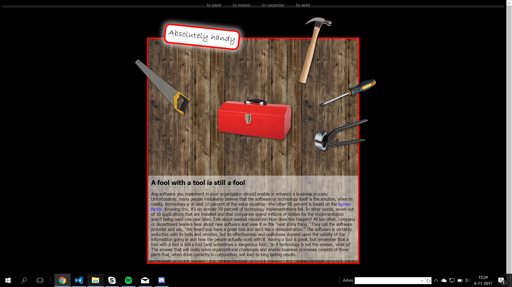

Wie ben ik?

Wie ben ik? Was de eerste opdracht die we moesten maken. Eigenlijk deel 1 van portefolio. Het was de bedoeling om je voor te stelllen
en om te vertellen waar je goed in was. En zo een beetje kennis te leren maken met HTML en CSS.
Recepten

Bij de opdracht recepten was het de bedoeling dat je een recept uitkoos en daar vervolgens 3 pagina's over maakten. De eerste pagina ging over
het gerecht zelf. De 2de pagina ging over de ingrediënten die je nodig had om het gerecht te maken. De 3de pagina ging over de bereiding
van het gerecht. dit was de 2de opdracht die we gemaakt hebben.
De vloot

Bij deze opdracht moesten wij een voorbeeld na maken met onze eigen code. Zo kreeg je de foto's te zien en moest je die vervolgens na maken.
De bedoeling van deze opdracht was er om je uit te leggen hoe de "Float" actie werkte.
RobotArm

Bij deze opdracht was het de bedoeling om met een klauw een stapel blokjes naar een andere positie te brengen met zo min mogelijk regels code te gebruiken.
je had 12 levels in totaal die je moest oplossen. bij deze opdracht leerden we een beetje kennis te maken met JavaScript.
Layout

bij deze opdracht was het de bedoeling om kennis te maken met flexbox. We moesten 4 nieuwsberichten maken over onze hobby met een link die je leidt naar
een uitgebreider nieuwsbericht. met 2 advertenties die als je er op klikt leidt naar de pagina van de advertentie. en ook nog 1 pagina waar we iets vertelde
over onze hobby
Grid

bij deze opdracht was het de bedoeling om 2 voorbeeld pagina's na te maken. Maar dan wel op de pixels precies.
Handy

Bij deze opdracht kregen we een paar voorbeelden en de plaatjes die je nodig had. alleen moest je het :hover gebruiken. Daarmee zorg je dat als je met
je muis ergens overheen gaaat dat er dan iets gebeurdt. zo moest je zaag naar het midden laten bewegen als je er over heen ging met je muis.